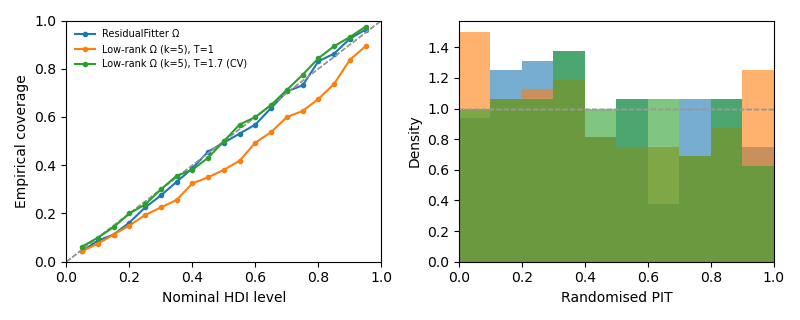
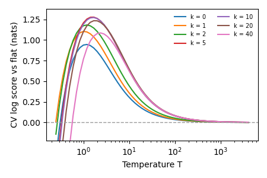

Note
Go to the end to download the full example code.
Calibrated decoding with a low-rank noise model¶
Decoding posteriors are only as good as the noise model. On real
single-trial fMRI data the residuals of an encoding model share many
components across voxels (on 7T numerosity data: ~40 factors), whereas
ResidualFitter models one shared factor
plus a tuning-similarity term. The result is a likelihood that is far too
confident.
braincoder.noise.LowRankNoise models
(k principal factors of the residual correlation plus diagonal
uniquenesses, Gaussian or Student-t) and tempers the likelihood,
\(p(s \mid y) \propto p(y \mid s)^{1/T}\). Both k and T are
chosen by nested, run-grouped cross-validation within the training data
on the decoding objective: the held-out log posterior probability of the
true stimulus.
Usage is three lines:
noise = LowRankNoise.fit(model, train_data, train_paradigm, parameters,
stimulus_range=grid, groups=train_runs)
pdf = model.get_stimulus_pdf(test_data, grid, noise_model=noise)
print(noise.summary())
Here we simulate a population with 4 shared noise factors and a slightly misspecified encoding model (estimated tuning widths too narrow — the typical consequence of overfitting tuning on noisy data), and compare calibration of three decoders on held-out runs.
import matplotlib.pyplot as plt
import numpy as np
import pandas as pd
from braincoder.models import GaussianPRF
from braincoder.noise import LowRankNoise
from braincoder.optimize import ResidualFitter
from braincoder.utils.calibration import calibration_summary, plot_calibration
pd.set_option('display.width', 120)
rng = np.random.default_rng(1)
Simulate data¶
80 voxels with Gaussian tuning to a 1-D stimulus; 12 training runs and 4 test runs of 40 trials. Noise: 4 shared factors (60% of the variance) plus independent voxel noise, voxel-specific scale.
V, k_true, n_per = 80, 4, 40
grid = np.linspace(-5, 5, 21).astype(np.float32)
true_pars = pd.DataFrame({'mu': rng.uniform(-5, 5, V), 'sd': rng.uniform(1, 3, V),
'amplitude': np.full(V, .5),
'baseline': np.zeros(V)}).astype(np.float32)
L = rng.normal(size=(V, k_true))
L *= np.sqrt(.6 / (L ** 2).sum(1, keepdims=True))
psi = 1 - (L ** 2).sum(1)
scale = rng.uniform(.5, 1.5, V)
model = GaussianPRF(parameters=true_pars)
def simulate(n_runs):
n = n_runs * n_per
x = rng.choice(grid, n)
mu = model.predict(paradigm=x[:, None], parameters=true_pars).values
noise = (rng.normal(size=(n, k_true)) @ L.T + rng.normal(size=(n, V)) * np.sqrt(psi)) * scale
return (pd.DataFrame((mu + noise).astype(np.float32)), pd.DataFrame({'x': x}),
np.repeat(np.arange(n_runs), n_per))
train_data, train_paradigm, train_runs = simulate(12)
test_data, test_paradigm, _ = simulate(4)
# The encoding model we decode with: tuning widths underestimated by 30%.
pars = true_pars.copy()
pars['sd'] *= .7
Three noise models¶
ResidualFitter(one shared factor + diag + σ²WWᵀ, Student-t).LowRankNoisewith k and T chosen by nested CV (the recommended path).The same Ω at T = 1 (no tempering), to show what the temperature does.
model.init_pseudoWWT(grid, pars)
omega, dof = ResidualFitter(model, train_data, train_paradigm,
parameters=pars).fit(method='t', init_dof=10.,
max_n_iterations=500,
progressbar=False)
noise = LowRankNoise.fit(model, train_data, train_paradigm, pars,
stimulus_range=grid, groups=train_runs)
print(noise.summary())
pdfs = {
'ResidualFitter Ω': model.get_stimulus_pdf(test_data, grid, parameters=pars,
omega=omega, dof=dof),
f'Low-rank Ω (k={noise.k}), T=1': model.get_stimulus_pdf(
test_data, grid, parameters=pars, noise_model=noise, temperature=1.),
f'Low-rank Ω (k={noise.k}), T={noise.temperature:.2g} (CV)': model.get_stimulus_pdf(
test_data, grid, parameters=pars, noise_model=noise),
}
summary = pd.DataFrame({name: calibration_summary(pdf, test_paradigm['x'])
for name, pdf in pdfs.items()}).T
print(summary[['log_score', 'coverage_0.5', 'coverage_0.95', 'pit_sd',
'r_posterior_mean']].round(3))
init_tau: 0.5257055759429932, 1.4947460889816284
USING A PSEUDO-WWT!
WWT max: 1.7025845050811768
LowRankNoise: 80 voxels, k = 5, temperature T = 1.68179, dof = 2.88e+03
mean shared (factor) variance fraction = 0.636; psi at floor: 0.0%
chosen by 12-group nested CV on 480 trials, 21 grid points; inner parameters: fixed
CV score = mean held-out log p(true stimulus) − log(1/n_stimuli), nats/trial
best_T score_at_best_T score_at_T=1
k
0 1.189 0.9462 0.9392
1 1 1.104 1.104
2 1.189 1.183 1.174
5 1.682 1.278 1.209
10 1.682 1.274 1.193
20 1.682 1.235 1.102
40 2.378 1.087 0.7695
log_score coverage_0.5 ... pit_sd r_posterior_mean
ResidualFitter Ω 1.084 0.494 ... 0.285 0.900
Low-rank Ω (k=5), T=1 1.319 0.381 ... 0.311 0.957
Low-rank Ω (k=5), T=1.7 (CV) 1.346 0.500 ... 0.274 0.957
[3 rows x 5 columns]
Calibration plot¶
Left: how often the q-HDI contains the true stimulus (diagonal = calibrated). Right: randomised PIT (flat = calibrated, U-shaped = overconfident).
fig, axes = plt.subplots(1, 2, figsize=(8, 3.2))
for name, pdf in pdfs.items():
plot_calibration(pdf, test_paradigm['x'], axes=axes, label=name)
axes[0].legend(fontsize=7, frameon=False)
fig.tight_layout()

The CV table¶
noise.cv_scores_ holds, for every (k, T), the mean held-out log
probability of the true stimulus relative to a flat posterior (nats per
trial). k is chosen by this decoding score, not by how well Ω fits
the residual covariance: on real data the covariance likelihood keeps
asking for more factors while decoding gets worse.
cv = noise.cv_scores_
fig, ax = plt.subplots(figsize=(4.5, 3))
finite = cv.columns[np.isfinite(cv.columns)]
for k_, row in cv[finite].iterrows():
ax.plot(finite, row.values, label=f'k = {k_}')
ax.set(xscale='log', xlabel='Temperature T', ylabel='CV log score vs flat (nats)',
ylim=(cv.values[np.isfinite(cv.values)].max() - 1.5,
cv.values[np.isfinite(cv.values)].max() + .1))
ax.axhline(0, color='0.6', lw=1, ls='--')
ax.legend(fontsize=7, frameon=False, ncol=2)
fig.tight_layout()

Total running time of the script: (0 minutes 10.053 seconds)